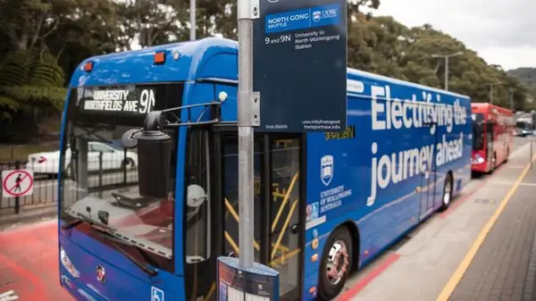
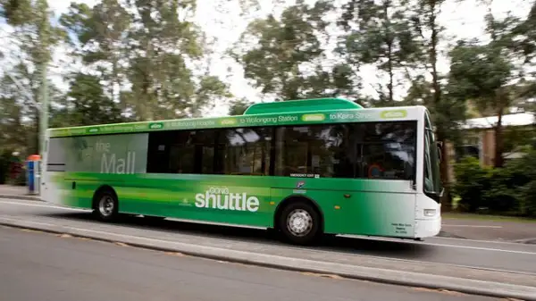
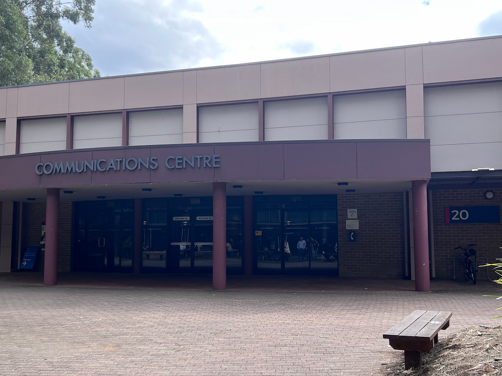

- Home
- Call for Papers
- Program Committee
- Registration
- Accepted Papers
- Technical Program
- Keynote Speakers
- Conference Venue
- Sponsors
- Contact Us

Venue
CANS 2026 will be held at University of Wollongong (UOW) main campus, Building 20. UOW is located on Northfields Ave, Wollongong NSW 2522. Various public transport options are available.
Location
Free shuttle buses

NORTH GONG (NG) SHUTTLE

GONG SHUTTLE
North Gong (NG) Shuttle
The NG Shuttle links the Wollongong Campus with North Wollongong Station.
Route 9 stops around the Ring Road, and Route 9N runs directly between the station and Northfields Ave bus interchange.
This service operates weekdays 7:50am to 10:00pm.
The service operates a full service timetable during session and exams and reduced services during recess periods. Check the timetable for exact details.
All UOW buses are low floor wheelchair accessible, except in exceptional circumstances.
Gong Shuttle
This is a free Transport for NSW public bus service. This service travels in clockwise (55C) and anticlockwise (55A) loops connecting UOW to the city, the beach, Innovation Campus, Campus East and Fairy Meadow. This service operates all year round on weekdays, weekends and public holidays.
Hours of 55A operation are:
Hours of 55C operation are:
Free Gong Shuttle Timetables:
All Gong Shuttles are wheelchair accessible.
You can download UOW maps here.
Nearby Hotels
4-Star
3-Star
Gallery
Building 20, UOW
